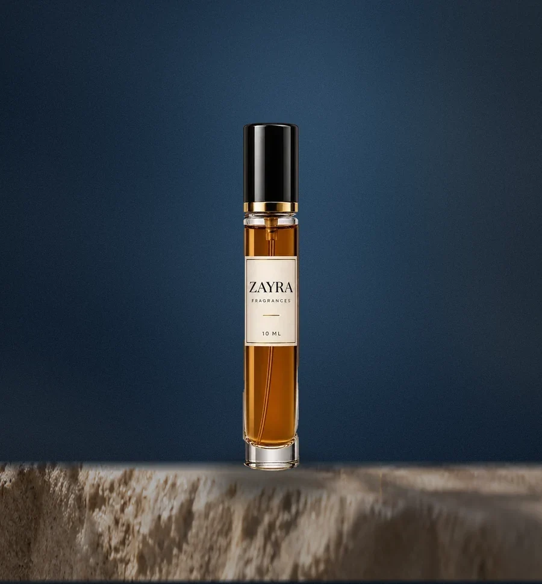

Flacon et décant : la différence
Le grand flacon identifie la fragrance. Vous achetez le décant ZAYRA de 10 ml uniquement.



Conserver votre décant
01
Conservez le vaporisateur à l’abri du soleil, de la chaleur et des changements brusques de température.
02
Testez la fragrance dans plusieurs contextes avant de choisir votre préférée.
03
Refermez correctement le vaporisateur et transportez-le avec précaution.
Questions fréquentes
Le 10 ml est-il le seul format individuel ?
Oui, toutes les références individuelles proposées sur ce site sont en format 10 ml.
Les grands flacons sont-ils inclus ?
Non, les grands flacons servent de référence visuelle uniquement.
Comment confirmer une sélection ?
Vous préparez un panier, puis ZAYRA confirme la disponibilité et les conditions commerciales.